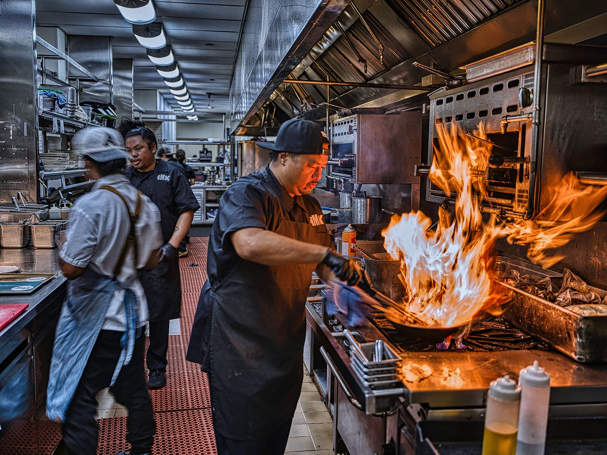
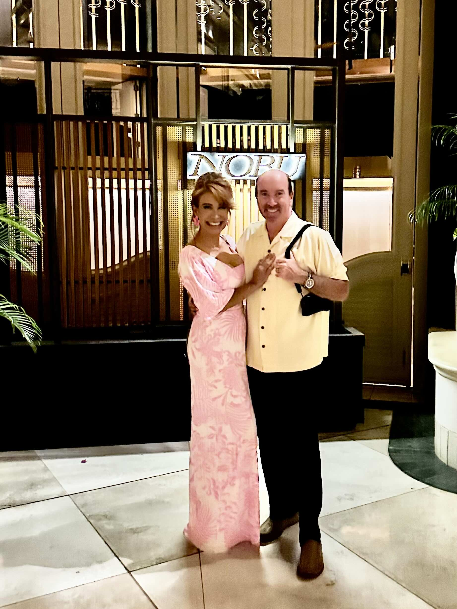
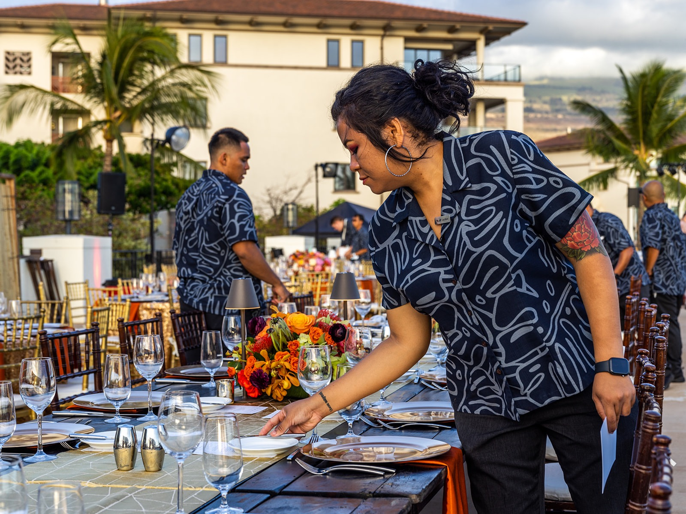

Our Personal Maui Restaurant Reviews
Once the sun dips below the horizon and your photo session wraps up, you will be ready for a great meal. Here is our personal local guide to the best spots in Wailea and Kihei.
From fine oceanfront dining to local fish tacos, end your sunset session with the best flavors in South Maui.

For engagements, anniversaries & special evenings.
Whether you're celebrating an engagement, a vow renewal, or an anniversary trip, ending your evening with exceptional food and ocean views makes the night complete.
Four Seasons Wailea
Our top recommendation for engagements, vow renewals, and anniversary evenings. Exceptional oceanfront dining across Ferraro’s, Spago, and DUO.
Humble Market Kitchin
Hawaiian-inspired fare created by Roy Yamaguchi, made with fresh local ingredients at the Wailea Beach Resort.
Koast
Australian dry-aged steaks and fresh local fish served in a refined, modern Wailea setting.
Morimoto Maui
Located at the Andaz Maui right where our Mokapu Beach sessions take place. World-class sushi overlooking the ocean.
Nobu at Grand Wailea
World-renowned Japanese-Peruvian cuisine in an exquisite indoor-outdoor setting at the Grand Wailea.
Aurum in Wailea
An exceptional, dedicated gluten-free culinary experience right in the heart of Wailea.
The Restaurant at Hotel Wailea
Adults-only and tucked into the hillside above Wailea. Open-air tables, jungle views, and one of the most romantic dinners on the island.
Ruth’s Chris Steak House
In The Shops at Wailea. Classic sizzling steaks and a polished dining room — an easy call after a sunset session.

Casual bites, craft beer & island flavors.
If you'd prefer to kick off your shoes, grab a casual burger, or enjoy fresh fish tacos with the family, these spots offer a relaxed vibe with fantastic quality.
The Pint & Cork
Located at The Shops at Wailea. Excellent burgers, elevated pub fare, craft cocktails, and a great beer selection.
Coconut's Fish Cafe
In Kihei. Famous for their legendary wild-caught fish tacos served high with fresh mango salsa on warm corn tortillas.
Monkeypod Kitchen
A Wailea favorite for scratch-made dishes, wood-fired pizza, and their iconic honey-creamed foam Mai Tais.
Maui Brewing Co.
In Kihei. Expansive outdoor patio, fresh local craft beers, artisanal pizza, and great food for families.
Paia Fish Market
The Kihei location of the Maui staple. Fresh-caught fish plates and tacos at picnic-style tables — easy, fast, and family friendly.
Bā Lé Vietnamese
In Wailuku, on the way to ‘Īao Valley. Banh mi, pho and rice plates — the casual lunch stop we make before or after an upcountry shoot.
Tin Roof Maui
By the airport in Kahului. Chef Sheldon Simeon’s takeout counter — the perfect first (or last) bite of the trip.
Our Personal Maui Restaurant Reviews
Watch our homemade video reviews of local Maui dining spots as we test out dishes, ambience, and post-photo session vibes across South Maui.